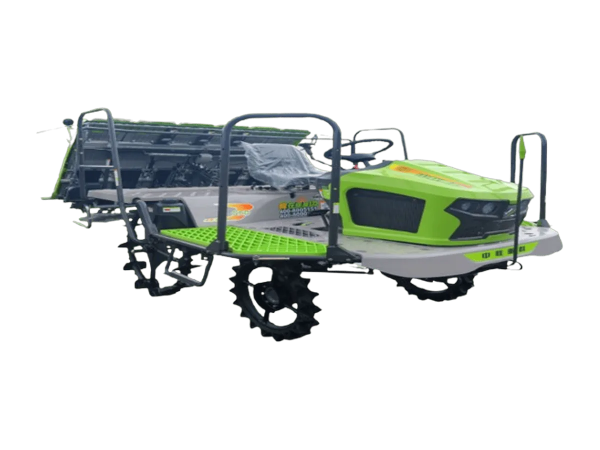

Rice Transplanter
Zoomlion G630 / G825 / G830
Rice transplanter ride-on berkecepatan tinggi Seri G dengan drivetrain bertenaga besar dan sistem linkage S-bend cerdas, menghadirkan operasi efisien dan hemat tenaga dengan adaptasi lahan yang baik serta penyetelan pengambilan bibit bertingkat
Keunggulan
- Efisiensi tinggi: drivetrain bertenaga besar dengan kecepatan operasi maksimum 1,75 m/s, tangki bahan bakar berkapasitas 35 L, dan lebih dari 150 tray bibit
- Produktivitas harian tinggi, memungkinkan tambahan 8 mu tertanam per hari dalam operasi berkelanjutan
- Sistem kendali tuas tunggal dengan linkage S-bend tersinkronisasi menghadirkan pengoperasian yang lebih sederhana
- Adaptasi lahan unggul: jarak terendah ke tanah 500 mm dengan jarak sumbu roda panjang, gardan depan-belakang dan sasis yang diperkuat untuk mengurangi risiko amblas
- 44 pengaturan laju bibit (4 melintang × 11 memanjang) memenuhi kebutuhan kerapatan tanam yang beragam
- Keandalan dan kenyamanan: mesin berperforma tinggi terintegrasi sistem pendingin dua sirkuit, dengan komponen utama dari pemasok papan atas untuk usia pakai lebih panjang
- Antarmuka operator yang ditingkatkan dengan kebisingan rendah, getaran rendah, dan kendali ringan untuk mengurangi kelelahan
Spesifikasi
| Model Mesin | Yanmar (Japan) |
|---|---|
| Tipe Mesin | 3 Silinder, 4 Tak, Diesel, Water-Cooled |
| Tenaga Mesin | 17,8 kW (24,2 PS) / 3.600 rpm |
| Dimensi Transportasi | 3.340 × 2.140–2.680 × 2.600 mm |
| Dimensi Operasional | 3.340 × 2.220–2.820 × 2.600 mm |
| Jarak Rendah Ketanah | 500 mm |
| Jumlah Baris Tanam | 6 (G630 / G830) / 8 (G825) |
| Jarak Antarbaris | 300 mm (G630 / G830) / 250 mm (G825) |
| Jarak Tanam | 100–240 mm (7 pilihan) |
| Kedalaman Tanam | 10–55 mm (7 level) |
| Kedalaman Pengambilan | 10–18 mm |
| Sistem Leveling | Electro-Mechanical |
| Tinggi Bibit | 80–250 mm |
| Umur Bibit | 2–4,5 Daun |
| Transmisi | Mechanical + HST |
| Konfigurasi Gigi | 3F+3R |
| Efisiensi Kerja | 0,2–0,64 ha/jam |
| Konsumsi Bahan Bakar | ≤5,2 kg/ha |
| Sistem Gerak | 4WD |
Tanya harga & ketersediaan unit
Tim kami siap membantu memilih unit yang sesuai kebutuhan lahan Anda.